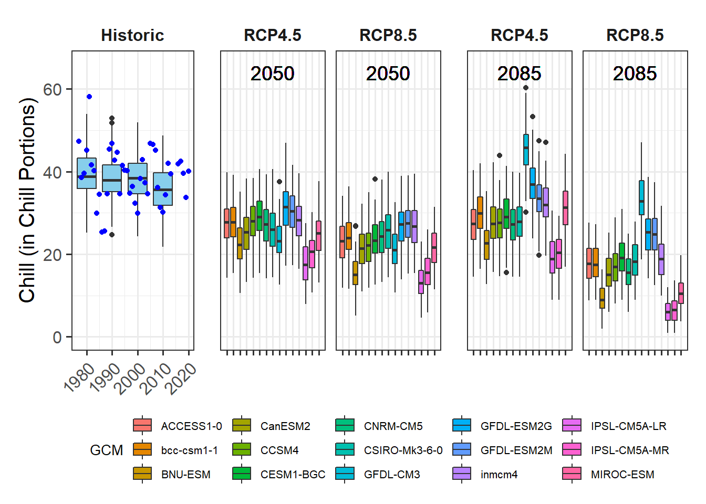
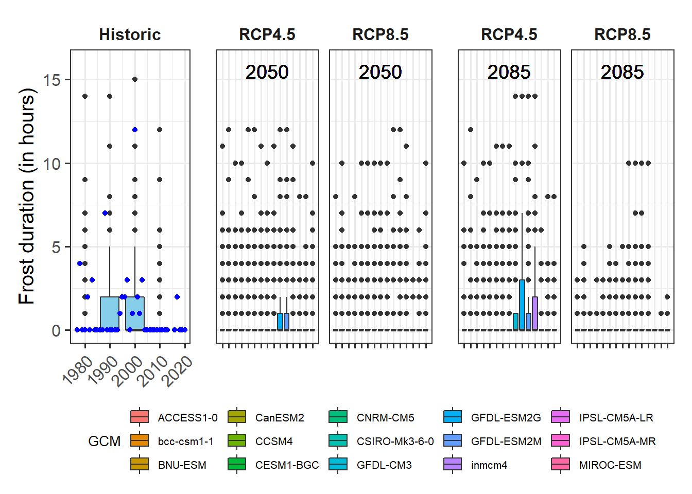

Chapter 15 Plotting future scenarios
1. Produce similar plots for the weather station you selected for earlier exercises.
library(chillR)
library(ggplot2)
library(reshape2)
library(kableExtra)
library(ggpmisc)
library(patchwork)chill_past_scenarios<-load_temperature_scenarios(
"data/chill",
"CapeTown_historic")
chill_observed<-load_temperature_scenarios(
"data/chill",
"CapeTown_observed")
chills <-make_climate_scenario(
chill_past_scenarios,
caption = "Historic",
historic_data = chill_observed,
time_series = TRUE)
RCPs<-c("rcp45","rcp85")
Times<-c(2050,2085)
for(RCP in RCPs)
for(Time in Times)
{ chill<-load_temperature_scenarios(
"data/chill",
paste0("CapeTown_",Time,"_",RCP))
if(RCP=="rcp45") RCPcaption <- "RCP4.5"
if(RCP=="rcp85") RCPcaption <- "RCP8.5"
if(Time=="2050") Time_caption <- "2050"
if(Time=="2085") Time_caption <- "2085"
chills <-make_climate_scenario(
chill,
caption =c(RCPcaption, Time_caption),
add_to = chills)
}for(nam in names(chills[[1]]$data))
{
ch<-chills[[1]]$data[[nam]]
ch[,"GCM"]<-"none"
ch[,"RCP"]<-"none"
ch[,"Year"]<-as.numeric(nam)
if(nam==names(chills[[1]]$data)[1])
past_simulated<-ch else
past_simulated<-rbind(past_simulated,ch)
}past_simulated["Scenario"] <- "Historic"
kable(past_simulated[1:5,]) %>%
kable_styling("striped", position = "left",font_size = 8)| Season | End_year | Season_days | Data_days | Perc_complete | Chill_CP | Heat_GDH | Frost_H | GCM | RCP | Year | Scenario |
|---|---|---|---|---|---|---|---|---|---|---|---|
| 2000/2001 | 2001 | 123 | 123 | 100 | 40.01651 | 25461.99 | 0 | none | none | 1980 | Historic |
| 2001/2002 | 2002 | 123 | 123 | 100 | 36.19151 | 26279.66 | 0 | none | none | 1980 | Historic |
| 2002/2003 | 2003 | 123 | 123 | 100 | 43.94242 | 25793.20 | 0 | none | none | 1980 | Historic |
| 2003/2004 | 2004 | 123 | 123 | 100 | 42.50185 | 24986.08 | 0 | none | none | 1980 | Historic |
| 2004/2005 | 2005 | 123 | 123 | 100 | 44.96755 | 25097.39 | 0 | none | none | 1980 | Historic |
past_observed <- chills[[1]][["historic_data"]] #simplyfying pointer
kable(past_observed[1:5,]) %>%
kable_styling("striped", position = "left",font_size = 8)| Season | End_year | Season_days | Data_days | Interpolated_days | Perc_complete | Chill_CP | Heat_GDH | Frost_H |
|---|---|---|---|---|---|---|---|---|
| 1976/1977 | 1977 | 123 | 123 | 1 | 99.18699 | 47.35204 | 24188.96 | 0 |
| 1977/1978 | 1978 | 123 | 123 | 0 | 100.00000 | 38.61035 | 25274.43 | 4 |
| 1978/1979 | 1979 | 123 | 123 | 0 | 100.00000 | 39.52377 | 26679.28 | 0 |
| 1979/1980 | 1980 | 123 | 123 | 0 | 100.00000 | 45.20518 | 23928.95 | 0 |
| 1980/1981 | 1981 | 123 | 123 | 0 | 100.00000 | 58.06163 | 20428.03 | 2 |
for(i in 2:length(chills))
for(nam in names(chills[[i]]$data))
{ch<-chills[[i]]$data[[nam]]
ch[,"GCM"]<-nam
ch[,"RCP"]<-chills[[i]]$caption[1]
ch[,"Year"]<-chills[[i]]$caption[2]
if(i==2&nam==names(chills[[i]]$data)[1])
future_data<-ch else
future_data<-rbind(future_data,ch)
}
kable(future_data[1:5,]) %>%
kable_styling("striped", position = "left",font_size = 8)| Season | End_year | Season_days | Data_days | Perc_complete | Chill_CP | Heat_GDH | Frost_H | GCM | RCP | Year |
|---|---|---|---|---|---|---|---|---|---|---|
| 2000/2001 | 2001 | 123 | 123 | 100 | 26.74566 | 27971.20 | 0 | bcc-csm1-1 | RCP4.5 | 2050 |
| 2001/2002 | 2002 | 123 | 123 | 100 | 26.81553 | 29202.97 | 1 | bcc-csm1-1 | RCP4.5 | 2050 |
| 2002/2003 | 2003 | 123 | 123 | 100 | 28.98867 | 28645.35 | 0 | bcc-csm1-1 | RCP4.5 | 2050 |
| 2003/2004 | 2004 | 123 | 123 | 100 | 32.31504 | 27616.76 | 0 | bcc-csm1-1 | RCP4.5 | 2050 |
| 2004/2005 | 2005 | 123 | 123 | 100 | 33.57207 | 28098.57 | 0 | bcc-csm1-1 | RCP4.5 | 2050 |
plot_scenarios_gg<-function(past_observed,
past_simulated,
future_data,
metric,
axis_label)
{
rng<-range(past_observed[[metric]],
past_simulated[[metric]],
future_data[[metric]])
past_plot<-ggplot() +
geom_boxplot(data = past_simulated,
aes_string("as.numeric(Year)",metric,group="Year"),
fill="skyblue") +
scale_y_continuous(limits = c(0, round(round(1.1*rng[2])))) +
labs(x = "Year", y = axis_label) +
facet_grid(~ Scenario) +
theme_bw(base_size = 15) +
theme(strip.background = element_blank(),
strip.text = element_text(face = "bold"),
axis.text.x = element_text(angle=45, hjust=1)) +
geom_point(data = past_observed,
aes_string("End_year",metric),
col="blue")
future_plot_list<-list()
for(y in c(2050,2085))
{
future_plot_list[[which(y == c(2050,2085))]] <-
ggplot(data= future_data[which(future_data$Year==y),]) +
geom_boxplot(aes_string("GCM", metric, fill="GCM")) +
facet_wrap(vars(RCP)) +
scale_x_discrete(labels = NULL, expand = expansion(add = 1)) +
scale_y_continuous(limits = c(0, round(round(1.1*rng[2])))) +
geom_text_npc(aes(npcx = "center", npcy = "top", label = Year),
size = 5) +
theme_bw(base_size = 15) +
theme(axis.ticks.y = element_blank(),
axis.text = element_blank(),
axis.title = element_blank(),
legend.position = "bottom",
legend.margin = margin(0, 0, 0, 0, "cm"),
legend.background = element_rect(),
strip.background = element_blank(),
strip.text = element_text(face = "bold"),
legend.box.spacing = unit(0, "cm"),
plot.subtitle = element_text(hjust = 0.5,
vjust = -1,
size = 15 * 1.05,
face = "bold"))
}
plot<- (past_plot +
future_plot_list +
plot_layout(guides = "collect",
widths = c(1,rep(1.8,length(future_plot_list))))) +
plot_annotation(theme = theme(plot.title = element_text(size = 24))) &
theme(legend.position = "bottom",
legend.text = element_text(size=8),
legend.title = element_text(size=10),
axis.title.x=element_blank())
}CapeTown_Heat_GDH <- plot_scenarios_gg(past_observed=past_observed,
past_simulated=past_simulated,
future_data=future_data,
metric="Heat_GDH",
axis_label="Heat (in Growing Degree Hours)")
CapeTown_Heat_GDH
CapeTown_Chill_CP <- plot_scenarios_gg(past_observed=past_observed,
past_simulated=past_simulated,
future_data=future_data,
metric="Chill_CP",
axis_label="Chill (in Chill Portions)")
CapeTown_Chill_CP
CapeTown_Frost_H <- plot_scenarios_gg(past_observed=past_observed,
past_simulated=past_simulated,
future_data=future_data,
metric="Frost_H",
axis_label="Frost duration (in hours)")
CapeTown_Frost_H
#ggsave("plots/CapeTownPlot_Heat_GDH.png", CapeTown_Heat_GDH, width = 10, height = 5, dpi = 800)
#ggsave("plots/CapeTownPlot_Chill_CP.png", CapeTown_Chill_CP, width = 10, height = 5, dpi = 800)
#ggsave("plots/CapeTownPlots_Frost_H_RED.png", CapeTown_Frost_H, width = 10, height = 5, dpi = 800)